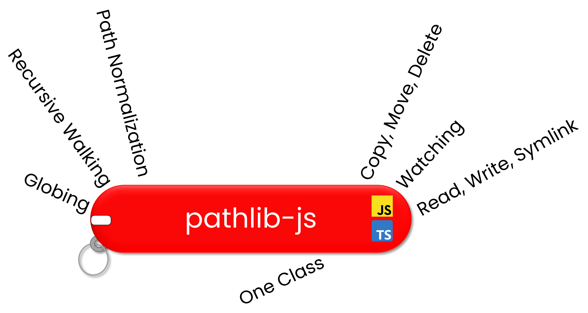

pathlib-js - v2.0.0

Object-oriented Filepath Operations in Javascript & Typescript


📝 Table of Contents
- Documentation
- Why pathlib-js
- Prerequisites
- Installation
- Usage Examples
- The Wonderful Libraries that this wraps around
- Testing
- Authors
- Acknowledgments
📚 Documentation
Full documentation for the Path class is now available at: the github pages section of this repository.
🤔 Why pathlib-js?
If you're coming from Python, think of it this way: this library is to NodeJS's fs and path modules as Python's pathlib is to its own os module.
Avoids the hassle of string preprocessing, filepath normalization, and passing filepaths between the multitude of functions found in nodeJS filesystem and path modules.
A single class Path wraps around a filepath and exposes an API for accessing its components, globbing, watching, reading, writing, traversing a tree structure, etc.
This is not the first package to take an OOP approach to filepaths in Javascript, but hopes to be more feature-rich than others from 5-6 years ago.
Prerequisites
NodeJS v12 or greater
Installation
You know the drill
npm i pathlib-js
or
yarn add pathlib-js
💡 Usage Examples
ℹ️ For demonstration purposes, the asynchronous versions of methods are used in the examples below. Keep in mind that
almost all of them have synchronous alternatives with a "Sync" suffix (i.e. copy --> copySync) ℹ️
For a complete API, please see the Documentation section.
Defining a path
Paths can be defined from a single string or multiple strings which are auto-resolved and auto-normalized into a single path.
import Path from "pathlib-js"
const fp1 = new Path("/home/Documents/Foobar.json");
const fp2 = new Path("/", "home/watch_this_disappear", "../Documents/Foobar.json");
console.log(fp1.path === fp2.path);
>>> true
Ease of manipulating filepath parts
const origFP = new Path("/home/jsmith/foobar.tar.gz");
// Change the entire basename
console.log(origFP.withBasename("bazqui.json").path);
>>> "/home/jsmith/bazqui.json"
// Change the entire set of extensions
console.log(origFP.withSuffix(".txt").path);
>>> "/home/jsmith/foobar.txt"
// Change only the last extension
console.log(origFP.withExtension(".newfinalext").path);
>>> "/home/jsmith/foobar.tar.newfinalext"
// Change the stem, keeping the extensions as they are
console.log(origFP.withStem("newStem").path);
>>> "/home/jsmith/newStem.tar.gz"
Getting parent, sibling, and child filepaths
Additional complexity (i.e. async iterator return, only directories, only files, etc.) is possible with additional options.
/**
* /home/jsmith/Foo/
|-> FolderA/
| |-> FileA1.txt
| |-> FileA2.txt
|
|-> FolderB/
|-> FileB1.json
|-> FileB2.json
*/
const fpDirA = new Path("/home/jsmith/Foo/FolderA")
console.log((await fpDirA.getPathsNLevelsAway(0, false)).map(p => p.path));
>>> [
'/home/jsmith/Foo/FolderA',
'/home/jsmith/Foo/FolderB'
]
console.log((await fpDirA.getPathsNLevelsAway(1, false)).map(p => p.path));
>>> [
'/home/jsmith/Foo/FolderA/FileA1.txt',
'/home/jsmith/Foo/FolderA/FileA2.txt'
]
console.log((await fpDirA.getPathsNLevelsAway(-1, false)).map(p => p.path));
>>> [
'/home/jsmith/Foo',
]
Globbing
/**
* /home/jsmith/Foo/
|-> FolderA/
| |-> FileA1.txt
| |-> FileA2.txt
|
|-> FolderB/
|-> FileB1.json
|-> FileB2.json
*/
const rootDir = new Path("/home/jsmith/Foo")
console.log((await rootDir.glob("**/File*1*")).map(p => p.path));
>>> [
'/home/jsmith/Foo/FolderA/FileA1.txt',
'/home/jsmith/Foo/FolderB/FileB1.json'
]
for await (const p of rootDir.globIter("FolderA/*")) {
console.log(p.path);
}
>>> "/home/jsmith/Foo/FolderA/FileA1.txt"
>>> "/home/jsmith/Foo/FolderA/FileA2.txt"
Getting a tree structure
Particularly useful for other programs which may desire representing filepath structure (i.e. MaterialUI Treeview)
/**
* /home/jsmith/Foo/
|-> FolderA/
| |-> FileA1.txt
| |-> FileA2.txt
|
|-> FolderB/
|-> FileB1.json
|-> FileB2.json
*/
const treeRoot = new Path("/home/jsmith/Foo")
console.log(await treeRoot.tree(true));
>>> {
filepath: '/home/jsmith/Foo',
depth: 0,
children: [
{
filepath: '/home/jsmith/Foo/FolderB',
depth: 1,
children: [Array]
},
{
filepath: '/home/jsmith/Foo/FolderA',
depth: 1,
children: [Array]
}
]
}
Creating, Moving, Copying, and Filetype Checking
// Existence checking
const startFP = new Path("/home/jsmith/Foo/FolderA");
console.log(await startFP.exists());
>>> false
// Creation
await startFP.makeDir(); // "home/jsmith/Foo/FolderA" will now be created
console.log(await startFP.exists());
console.log(await startFP.isDirectory());
console.log(await startFP.isFile());
>>> true
>>> true
>>> false
// Copying
console.log(await startFP.withBasename("FolderA_copy").exists()); // Sanity check
>>> false
const copyFP = await startFP.copy(startFP.withBasename("FolderA_copy"));
console.log(await copyFP.exists());
console.log(await startFP.exists()); // Still exists b/c it was a copy operation
>>> true
>>> true
// Moving/Renaming
const moveFP = await copyFP.move(copyFP.withBasename("FolderA_moved"));
console.log(await copyFP.exists()); // Will no longer exist b/c of move/rename
console.log(await moveFP.exists());
>>> false
>>> true
// Deletion
await startFP.delete();
await moveFP.delete();
console.log(await startFP.exists());
console.log(await moveFP.exists());
>>> false
>>> false
🧪 Testing
This library is regularly updating its test suite with additional case scenarios.
⚠️ At the current time, please anticipate the following conditional test failures: ⚠️
- On Windows,
makeSymlink()andmakeSymlinkSync()methods will fail if the environment they are used in lacks administrator priveleges (i.e. testing in VScode without starting it up with admin priveleges). This caveat has not been seen on Unix-based systems.
🥇 The Wonderful Libraries that this wraps around
This wouldn't be possible without these awesome libraries. Give them a star.
- node-fs-extra - Enhanced filesystem operations.
- chokidar - Robust and efficient filesystem watching.
- fast-glob - Robust and fast globbing potential.
- path-normalize - Workhorse function for robustly normalizing filepaths
✍️ Authors
🎉 Acknowledgements
A thank you to the individuals who actually read README file from start to finish.